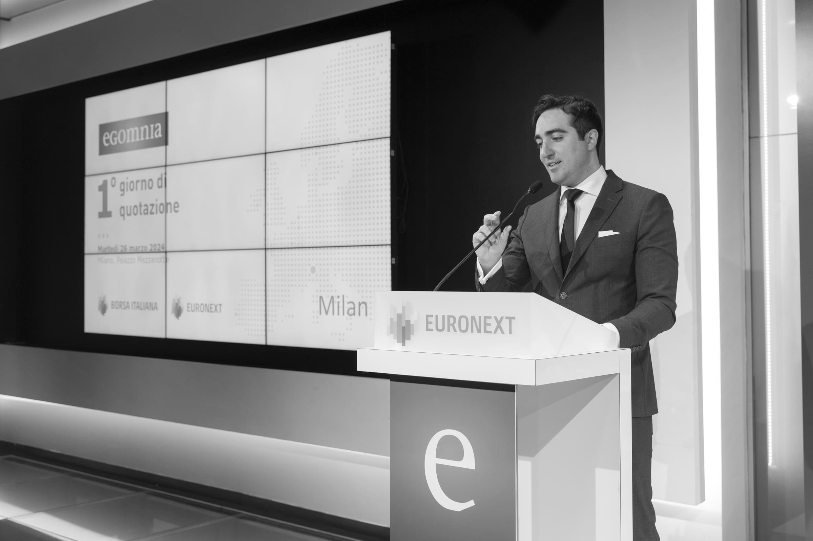

Holding di Investimento Familiare
Costruiamo, gestiamo e preserviamo valore nel tempo.
Linea di Business
Partecipazioni Societarie
Le partecipazioni sono selezionate secondo criteri di solidità, sostenibilità e prospettiva nel tempo. La holding opera come azionista stabile, con un focus sulla tutela del capitale e sulla crescita di lungo periodo.
Linea di Business
Immobiliare
Il patrimonio immobiliare della holding è gestito secondo principi di conservazione e prudenza. Gli immobili sono destinati prioritariamente a supporto delle società partecipate, rappresentando un fattore di stabilità e continuità nel lungo periodo, con un approccio orientato alla tutela del valore e non alla speculazione.
Linea di Business
Diritti d'Autore
La holding detiene e gestisce diritti d'immagine e d'autore, marchi e segni distintivi, con finalità di tutela e coerenza dell'identità del gruppo, a supporto delle attività delle società partecipate e del loro posizionamento nel mercato.
Diversificazione
Altri Asset
Possono essere detenuti ulteriori asset, anche non finanziari, purché coerenti con la conservazione del capitale, la gestione prudente del patrimonio e le esigenze di rappresentanza e supporto alle attività del gruppo e delle società partecipate.

Le Origini
Storia
La holding nasce nell'Aprile del 2026 per volontà di Matteo Achilli con un obiettivo chiaro e ambizioso: costruire un'azienda capace di durare mille anni. Una struttura pensata per unire le generazioni, preservarne la memoria e rafforzare il legame familiare, consentendo ai suoi membri di vivere pienamente la propria vita, liberi dal vincolo del bisogno economico e con la responsabilità di contribuire al bene della collettività.
Matteo Achilli è un imprenditore italiano nato a Roma nel 1992, noto per aver fondato nel 2012 Egomnia, un'azienda informatica pioniera del digitale in Italia, sviluppando una piattaforma dedicata all'incontro tra chi cerca lavoro e le aziende, con un algoritmo che favorisce una valutazione meritocratica dei candidati in base al loro percorso formativo e professionale. Studente di economia presso l'Università Bocconi di Milano, Achilli ha visto la sua storia raccontata anche in un documentario della BBC e, successivamente, in un film biografico della RAI. Con l'evolversi dell'intelligenza artificiale, ha diversificato il modello di business, investito in R&S e guidato l'azienda fino alla quotazione alla Borsa di Milano, consolidandone la crescita e la visione strategica.
Al centro della holding vi è il valore di una famiglia unita. Le grandi famiglie patrimoniali del mondo condividono un tratto comune: la fierezza delle proprie radici, la conoscenza del proprio albero genealogico e una visione capace di attraversare le generazioni. La continuità nasce dall'identità e dalla consapevolezza di ciò che si è stati e di ciò che si vuole diventare, tanto nei momenti di crescita quanto in quelli di prova.
Le linee guida sull'utilizzo del patrimonio di famiglia sono ferree e rigorose. Esse seguono la visione precisa e vincolante del fondatore: chiunque decida di partecipare attivamente alla holding, pur avendone diritto per discendenza, è tenuto a rispettare la volontà di colui che ha reso possibile la creazione e la crescita di questo progetto attraverso impegno, visione e determinazione.
"Costruire qualcosa che sia più grande di noi stessi."
— Matteo Achilli, Fondatore